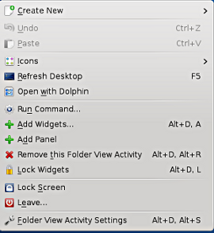
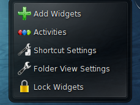
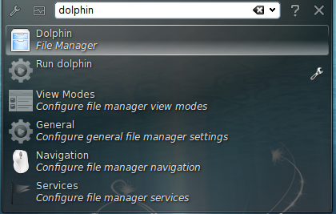
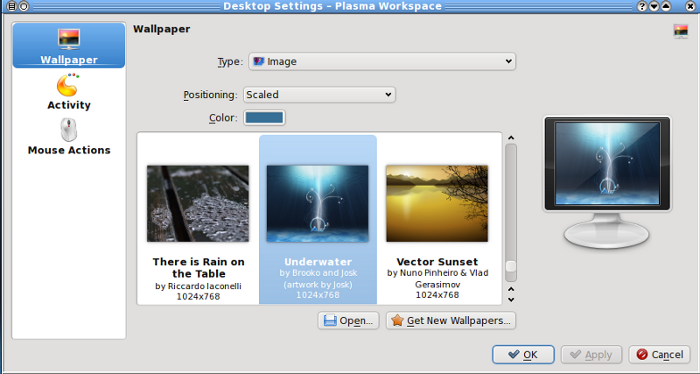
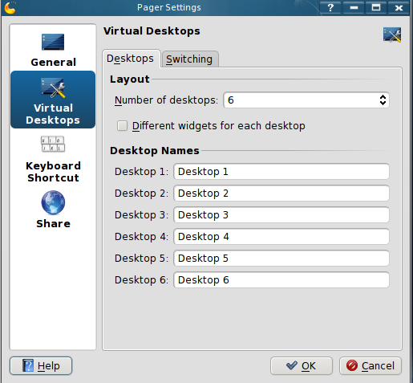
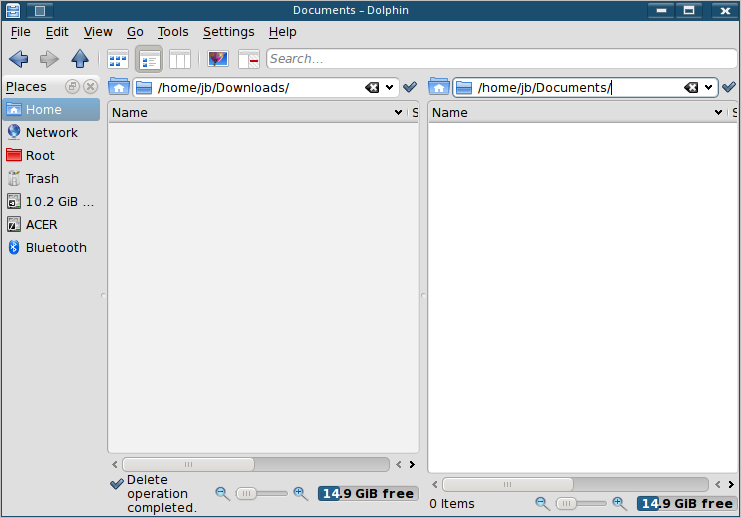

The MEPIS 11 Desktop
This quickstart document is designed to acquaint you with the basic operation of the MEPIS 11 desktop; see also the Users Manual (Section 3.4) and the MEPIS Wiki under "KDE4."
After logging into Mepis 11.0 you will see the KDE4 desktop. The default Desktop for Mepis is Folder View, meaning that the desktop shows the contents of the Desktop directory in your Home. The Folder View desktop comprises the following elements:
#1: The KDE Panel:
By default, the panel on the KDE desktop contains L-R:
- The Main Menu icon on the extreme left. Installed programs are automatically listed in the Main Menu in the appropriate category. To start a program, click on the Main Menu icon in the panel or press Alt + F1, select the desired category, then navigate to the program listing and click it.
- The Pager, which provides access to virtual desktops (see #9 below)
- Quick launch program icons.
- System Settings (see #7 below)
- Dolphin (File Manager) (see #10) below
- Firefox (Browser)
- Kmail (Mail Client)
- In the middle, the Taskbar shows currently open windows. In this case, the Quickstart manual which you are now viewing.
- On the right, the System Tray holds installed essential processes:
- Information
- Upgrade notifier
- Clipboard
- Sound mixer
- Network manager
- Hidden icons
- Clock/calendar
- The panel settings icon ("cashew") is on the extreme right.
When you hover the mouse pointer over an icon in the panel, a short description is displayed.
To better understand the underlying capabilities of the KDE4 panel icons, click on Main Menu at the bottom of your screen to explore its options.
#2 Desktop Context Menu

Right-click in an empty area of the desktop to access the context menu for configuring the appearance of the desktop, adding panels or widgets to the desktop, configuring desktop settings, locking the widgets in their current position, leaving the current session, or for locking the current screen.
Remember that Locking Widgets prevents you from messing up anything. Unlock Widgets to add or move elements, then Lock Widgets again to protect your configuration.
#3 Desktop Tool box, “The Cashew”:
Move your mouse pointer to the top right hand corner of the desktop and click “the cashew” to access its menu. Desktop elements can be locked in their current position on the desktop to prevent them being moved around or accidentally being deleted. As long as the desktop elements are locked you cannot add, move or remove any objects from the desktop. To lock or unlock the desktop, right-click an empty patch on the desktop or the cashew icon (desktop toolbox) at the top right corner and select Lock Widgets or Unlock Widgets.
#4 The Run Command:
KRunner is a helper application that lets you quickly start programs, It also offers a search function for finding applications or locations.
Press Alt + F2 to open the Run command dialog, or right-click anywhere on the desktop and choose Run command.
Type a command —for example, “dolphin”. While you are typing, the dialog shows a list of applications or actions that match your input. Select one of the results, or press enter to launch the highlighted application or action.
The command to start the application is often ( but not always) the application name written in lowercase. KRunner's abilities can also be extended by a number of plug-ins that provide additional functionality.
Consult the Users Manual for details.
#5 Individual Desktop Elements:
In the following section you will find some examples of how to change individual desktop elements:
Adding Program icons to the Desktop
To create a link to an application and place it on the desktop or the panel:
- Click on the Main Menu icon and browse to the desired application.
- Right-click and select Add to Desktop from the context menu. If this menu is not available youi probably forgot to unlock your desktop elements.
- To change the icon position on the desktop, left-click on the icon and drag it to the desired position.
- To delete an icon from the desktop, right-click the program icon and select Remove this Icon.
Panels
If you want multiple panels on the desktop, right-click an empty area on the desktop and select Panel Options > Add Panel. A new cashew icon appears on the desktop, representing the panel. (If these menu items are not available, your desktop objects are probably locked!)
Click the icon to access the panel configuration options and customize the new panel as described in “Configuring Panels”.
To delete a panel, right-click a blank space in the panel you want to delete and select Panel Options > Remove this Panel. Normal operation of MEPIS requires that at least one panel is left on the desktop.
#6 Desktop Background
You can change the desktop background to display images, a slideshow, patterns or colours. It is even possible to use a map of the globe or the weather report as desktop background.
Right-click an empty patch of the desktop and select Folder View Settings. A configuration dialog appears.
In the Wallpaper section, choose from the Type drop-down list what you want as desktop background. The further configuration options depend on the choice of object to use as background.
For example to use an image wallpaper:
- Set Type to image, To use one of the available wallpapers, either choose a wallpaper from the list or click Get New Wallpapers to download additional wallpapers. To use custom a picture, click Open and select an image file from the file system.
- Define the Positioning of the image.
- Set the options in the configuration dialog according to your wishes, and click OK to save your changes and leave the configuration dialog.
#7 System Settings
System Settings is the central place for users to change the overall appearance and behaviour of many components of the KDE desktop. Launch it with the panel icon or from Main Menu > Settings > System Settings. To get an impression of the numerous possibilities, click on a category icon and explore the options. Performing tasks in some areas of System Settings requires the root password.
- Change the settings as desired, but no changes will take effect until you click Apply.
- To discard changes in the recent view that you have not yet applied, click Reset.
- To reset all items in the recent view to the default values, click Defaults.
- To get back to the start-up view, click the Overview arrow at the top left corner of the dialog.
Details can be found in the Users Manual Section 3.4.
#8 Desktop Effects
If your computer supports a 3D graphic card with the correct driver installed, you can use graphical effects like turning your desktop into a rotating 3D cube, you can also use other window effects such as shadows, fading, and transformations. If you do not have a 3D graphic card or the correct driver is not installed, the desktop effects will be disabled.
If the performance of your computer is slow or jerky, disable the compositing effects in the current session with Alt + Shift + F12.
To configure effects on your desktop:
Start System Settings > Select Desktop > Desktop Effects, and choose Enable Desktop Effects, if you graphic card does not support 3D or the correct driver is not installed, you will be notified.
On the All Effects Tab, select the effects you want to use, Click on the information icon for a short explanation of the respective effect. If an effect is activated, the wrench icon on the right gives further configuration options like assigning keyboard shortcuts to the effect.
Use Apply to enable the effects permanently.
#9 Virtual Desktops
The desktop environment allows you to organize your programs and tasks on several virtual desktops (4 by default). If you often run a lot of programs simultaneously, this minimizes the number of windows to arrange on your screen. You might for example, use desktop #1 for web browsing, #2 for word processing and #3 for graphics applications.
Moving an Application to Another Virtual Desktop:
You can display a running application on one or all virtual desktops, or move it to other desktops.
- Open the application.
- Right-click the title bar of the application.
- Click To Desktop.
- Select the desktop on which to place the application.
To switch between desktops, click the desired desktop in the pager in the panel.
Configuring Virtual Desktops:
You can increase the number of virtual desktops, change the default names, assign activities, configure effect animations or assign keyboard shortcuts for switching virtual desktops.
- To add additional desktops, right-click the pager in the panel and select Add Virtual Desktop. A new desktop is shown in the pager.
- For any configuration options, right-click the pager and select Configure Section "Screen"
- To add additional desktops, right-click the pager in the panel and select Add Virtual Desktop, a new desktop is shown in the pager.
- For any configuration options, right-click the pager and select Pager Settings.
- Set the options according to your wishes and click OK to apply the changes and close the configuration dialog.
If you want the names of the desktops to appear in the pager rather than a number, right-click the pager and select Pager Settings. From the radio button list, select Desktop Name, Click OK to apply your changes and close the dialog
#10 File Manager (Dolphin)
With KDE 4, Dolphin has replaced Konqueror as the default file manager. To start Dolphin, click on the “file cabinet” icon in the panel, or press Alt + F2 and type in dolphin.
Main Window
- Menu Bar: The menu bar holds menu items for actions like copying, moving, or deleting files, changing views, starting additional tools, defining your settings, and getting help.
- Toolbar: the toolbar provides provides quick access to frequently used functions that can also be accessed via the menu, if you hover the mouse cursor over an icon, a short description is displayed.
- Location Bar: The location bar displays the path to the current directory. It is available in 2 versions: one shows the path to the current directory with icons for every parent folder in a “bread crumb” view. Click on any icon in the bread crumb view to change to that directory. The second version of the location bar shows the path to the current directory as a string of text that you can edit.
- Panels: By default dolphin shows the Places and information panel. The Places panel allows quick access to some often used places like your home directory, the root directory of the file system (/) and removable media. The information shows detailed information about the selected item, and allows ratings, tags or comments to it. There are several other panels which can be added to the main window.
- Display Field (Working Space): The display field shows the contents of the selected directory or file. By default Dolphin displays the contents of your home directory on start-up. By default, clicking on a folder or file in Dolphin starts an action: Dolphin loads the file into an application for further processing or opens the folder.
- Status Bar: Shows the file type and size of the currently selected object and allows you to enlarge or diminish the size of the icons or entries in the display field.
Managing Files and Folders
Note: copying, moving, creating or deleting files outside your Home directory may require root permission. If that is the case, then use the root Dolphini by clicking Start Menu > System > Dolphin as su (File Manager as su) and supplying root's password in the dialog box that pops up..
To copy, move or delete a file or folders:
- In order to select one or multiple files and folders in Dolphin:
a) Move your mouse cursor over the file or folder but do not click. A green cross appears on the upper-left edge, if you click on it, the object is selected. To deselect the object click on the red minus icon that appears.
b) Alternatively, press Ctrl and click the objects you want selected or deselected. Right-click and select Copy or Cut from the context menu. - Navigate to the destination folder in which to insert the object(s). To create a new folder at the current location, select File > Create New > Folder, or press F10, enter a folder name in the new window and press Enter.
- To insert the object/s you copied or cut, right-click the destination folder in the main display field and select paste.
To delete a file or folder, you have two options, right-click the object in the main display field and select Move to Trash from the context menu. The object is moved to the trash bin, from there you can restore it if necessary or delete the object permanently. Or you can select Delete from the context menu, bear in mind when it is deleted it gone for good and you will be unable to restore it.
Configuration
Dolphin offers many options for adjusting the view and the overall settings according to your preference. See the Wiki for details.
View
- To switch from the "bread crumb" view (where path elements are links) to the editable version of the location bar, press F6. Enter a path to a directory by typing it in. After typing in the address, press Enter or click on the background of the bread crumb view.
- To delete the contents of the location bar click on the black X symbol on the right. To switch back to the bread crumb view, press Ctrl + L.
- To change the view of the currently displayed folder, either click on Icons, Details, or Columns in the toolbar. Dolphin remembers the selected view for each folder.
- Click Split or press F3 to view the contents of the current folder in two separate columns. Now you can navigate to a different directory in each column and easily drag or drop objects or compare the contents of directories. Press F3 again to leave the split view. 
- To make Dolphin also show hidden files, select View > Show Hidden Files, or press Alt and the period.
- To view more details about files like access permissions or ownership in the work space, select View > Additional Information, and enable the corresponding options.
- To add further directories to the Places panel, drag a folder from the working space to the Places panel and drop it there. Right-click and use the context menu to hide, edit or remove entries from Places.
- To add more panels to the main window, Select View > Panels and select additional panels such as Folders or Terminal.
- Detach the panels from the main Dolphin window by clicking the left icon at the top of each panel. Click the panel's title bar and drag it to another place on the desktop. To reintegrate the panel into the Dolphin window, click the left symbol at the top of the panel.
- To quickly filter for certain file-names in the current directory , Press Ctrl + I to add the filter input field to the bottom of the Dolphin main window. Type any part of the file name you are searching for to see all the files in the current directory containing the search string.
Overall Behavior
If you want to change Dolphin's overall behavior or view, select Settings > Configure Dolphin and explore the options available in the Dolphin configuration dialog.
To use the same view mode for all folders, click View > Adjust View Properties, in the configuration dialog Apply View Properties To check All Folders.
If you want Dolphin to show a different directory on start-up, Settings > Configure Dolphin > Startup (Tab) Location, edit the location to your choice of startup folder.
#11 Desktop search (Kfind)
To perform basic and more advanced searches, use Kfind. Start it from the Main Menu > Find Files/Folders or press Alt +F2 and enter kfind.
Searching by Name
- To use a filename or part of a filename in the Named input field. Use wild cards, such as an asterisk (*), to indicate missing characters in the filename. Specify the folder in which to search for the file. Either enter a path to the folder in Look in or click Browse to locate the folder.
- To search subfolders, check include Subfolders.
- Click Find to start the search. The results are displayed in the lower part of the dialog.
- To directly open the result, just click on it. Right-click it to choose one of the options from the context menu.
Searching by Contents or Properties
- For a more detailed search, you can also specify further options, such as a text the file must contain either the creation or modification date for the file.
- On the Name/Location tab, specify at least the path to search for the file. You can leave Named empty.
- To search for properties such as creation or modification date of the file, click the Properties tab and choose the options you want.
- Click Find to start the search.
#12 Alternative Desktops
The default desktop in Mepis is Folder View, but there are others available:
- Desktop
- Desktop with Search and Launch Containment
- Netbook
- Newspaper Activity
To change the default Folder View to Desktop, for instance, right-click on an empty area of the desktop, and Unlock Widgets, then right-click again on an empty area of the desktop, and select Folder View Activity Settings in the context menu, in the context menu click on Activity in the left panel, from the dialog click on Desktop. (or click on Search and Launch Containment) Apply and then OK. You can now add widgets to your new desktop.
For details, see the Users Manual Section 3.4.